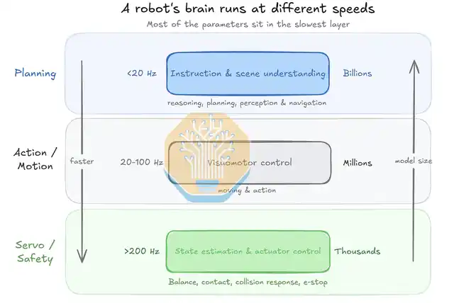

GPT-6 Astra 让机器人拥有了更强的“大脑”：它能够理解任务、进行空间推理和规划，并通过探索与恢复完成陌生任务，大幅降低了具身智能中任务级智能的获取成本。但从“能做出来”到“稳定、快速、灵巧地做”，仍然需要将这些昂贵的推理经验转化为可复用的具身技能。VLA 在这里扮演关键角色：承接 Astra 首次解决任务产生的经验，通过经验固化形成快速的视觉运动策略，并在反复执行中进一步向本体运动能力沉淀。WAM 则更适合成为学习阶段的“练习场”，扩展一次真实交互能够产生的经验，而不必永久存在于每一次执行中。
Astra：具身未死
GPT-6 Astra 的出现，展示了不同于 VLA / WAM 的另一种可能：当通用基模本身的视觉理解、空间推理和 agentic interaction 能力足够强时，相当一部分过去需要具身模型重新学习的能力，已经可以直接迁移到机器人环境中。此时更值得讨论的是，哪些能力仍然必须从具身数据中获得，以及 VLA、WAM 和底层控制分别应该承担什么角色。
根据 RoboCurve 的结果，Astra 接收多视角 RGB 与 proprioception，通过通用 action interface 闭环控制机械臂，在 block-to-bowl 上取得了 19/20 的成功率，而在需要精细接触的 puzzle insertion 上只有 2/20。同时，Astra 并不直接处理 joint-level control，它产生的是 Cartesian end-effector target，随后仍然需要底层 controller 完成执行。基模的 scaling 已经能够覆盖相当一部分 task understanding、spatial reasoning、replanning 和 failure recovery，但越接近真实物理交互，能力仍然越依赖具身环境下的动作先验、控制频率和接触动力学。95% 到 10% 的性能落差，说明从通用智能到物理智能之间仍然存在明显的能力断层。 RoboCurve
从现有的 S2–S1–S0 分层出发，随着基模能力继续 scaling，S2 所承担的 task understanding、planning 和 embodied reasoning 很可能越来越容易从通用模型中获得；而越往下，能力越依赖具体 embodiment，对控制频率、接触稳定性和运动精度的要求也越高。能力从 S2 向 S0 的演化，本身伴随着通用性降低、执行速度提高和本体特异性增强。Astra 的结果进一步强化了这种分工：上层智能的能力边界正在快速扩张，但 sensorimotor intelligence 并没有随之被自动解决。具身没有消失，变化的是具身模型究竟还需要学习什么。
从“第一次想明白”到“不需要再想”
目前 S2–S1–S0 解决得比较充分的是执行阶段的分层：上层 reasoning 产生目标，中层 visuomotor policy 将目标转化为动作，底层 controller 完成高频控制。更值得研究的是这些层级之间如何发生学习上的能力迁移。假设 Astra 第一次面对一个陌生任务，通过多轮观察、探索和 recovery 最终完成任务，那么第二次遇到类似状态时，继续支付完整的 S2 推理成本显然没有必要。第一次解决任务产生的经验应该能够向下迁移，使原本依赖 S2 reasoning 的行为逐渐形成 S1 skill，并在反复交互后进一步沉淀为 S0 motor prior。机器人真正需要学会的，是如何把“这一次想明白了”变成“下一次不需要再想”。
这里的问题并不等同于直接拿 GPT 生成的数据训练 VLA。Astra 首次解决任务产生的探索轨迹通常包含主动 probe、failed attempt、回溯、重复观察和 recovery，其中一部分具有信息增益，是 agent 在未知环境中完成推理所需要的；另一部分则只是首次探索产生的额外成本。直接学习完整 trajectory，policy 会同时学习有效动作和探索冗余；只截取最终成功片段，又可能丢掉对 distribution shift 很有价值的 recovery。一个 frontier agent 用十次尝试解决一个陌生问题，这十次尝试对于“找到答案”可能都有价值，但一个已经掌握这个任务的 fast policy 显然不应该把十次探索重新执行一遍。
因此，从 S2 到 S1 之间还需要一个经验固化（Experience Consolidation）过程：从完整探索轨迹中识别真正决定任务成功的 subgoal、关键状态转移和恢复策略，再将这些信息重新组织成适合快速 policy 学习的监督信号。经验固化也不只是简单删除 failed attempt，它还包括对探索过程中因果信息的提取、失败经验的利用，以及从一次具体成功向一类相似状态的泛化。一个失败动作可能不应该被 S1 模仿，但它仍然告诉系统“什么状态会导致失败”；一次 recovery 可能增加首次执行的长度，却可能成为 policy 面对 distribution shift 时最有价值的经验。真正需要固化的并不是一条更短的 trajectory，而是探索过程中获得的、能够支持未来行动的信息。
只有经过这一步，一次 reasoning 的时间和部署成本才能被后续大量执行逐渐摊薄：让 S2 承担第一次解决问题的探索成本，再由 S1 吸收其中可复用的经验。推理本身也由此从一次性的计算过程，转化为下一阶段学习的数据来源。我们需要学习的不是探索本身，而是探索之后留下来的能力。

WAM：技能形成之前的练习场
这条主链路并不要求 WAM 必须存在。最直接的经验来源可以是真机探索，也可以来自 human demonstration、simulator 或其他交互环境。WAM 的价值在于降低获取经验的成本：面对陌生任务时，S2 可以提出多个 candidate actions，WAM 对这些动作进行 action-conditioned rollout，在真正执行之前扩展和筛选可能的未来，再让少量值得验证的方案进入真机。
这也意味着 WAM 未必需要永久参与每一次执行。对于已经被反复执行、policy 本身具有较高成功率的 skill，持续生成多个未来的边际收益会越来越低；如果每次抓取一个已经见过数百次的杯子，系统仍然需要重新 rollout 多条未来轨迹，那么此前获得的经验并未真正进入 policy。更自然的路径是让 WAM 主要服务于 skill acquisition：在技能尚未形成时扩展经验空间，在经验被固化进 VLA 后逐渐退出熟悉任务的执行路径。
所以，经验固化负责把昂贵的智能转化成廉价的能力；WAM 则负责让获得这些经验的过程更便宜。它更像机器人学习阶段的一个模拟训练场：真实世界只允许机器人获得少量、昂贵的交互经验，而 WAM 可以围绕这些经验展开更多可能的未来。它所放大的并不是数据量本身，而是每一次真实交互所能产生的学习价值。
让大脑获得的知识进入身体
在这样的系统中，机器人的推理路径会随着经验积累逐渐缩短。陌生任务需要更多 S2 reasoning；随着成功经验积累，探索轨迹经过经验固化进入 VLA，大部分任务开始由 S1 快速执行；对于高度重复、强本体相关的行为，还可以继续通过 RL、策略蒸馏或其他 motor learning 方法向 S0 沉淀。一个任务从“需要推理”逐渐变成“已经掌握”，对应的其实就是上层计算不断被下层 policy 吸收的过程。能力并没有消失，而是在经验积累中逐渐从“思考”沉入“身体”。
从这个角度看，Astra 对 VLA 和 WAM 的影响可能没有最初想象得那么悲观。通用基模越强，机器人系统越没有必要在每一个层级重新学习相同的智能：S2 负责新任务的理解、探索和规划，VLA 吸收经过固化的经验并负责快速执行，底层 policy 处理具体本体上的高频控制；WAM 则作为可选的练习场，在学习阶段利用想象提高真实交互的数据效率。Astra 负责第一次“想明白”，WAM 帮助它在想象中练习，VLA 把经验变成技能，最终让技能沉淀为身体的“肌肉记忆”。
随着基模继续强化，S2 的成本可能会持续下降。届时具身智能更核心的问题会逐渐转向能力迁移：昂贵的 reasoning 能够产生多少可复用的具身经验，这些经验能否形成稳定的 skill，以及已经形成的 skill 能否继续迁移到更低延迟、更高频率的 motor policy。对于机器人而言，获得一个越来越聪明的大脑可能会逐渐变得容易，真正困难的，是如何让大脑获得的知识进入身体，并最终成为不再依赖大脑反复推理的能力。
“There is more wisdom in your body than in your deepest philosophy.”“你的身体里，有比你最深邃的哲学更多的智慧。”— Friedrich Nietzsche, Thus Spoke Zarathustra
GPT-6 Astra gives robots a stronger “brain”: it can understand tasks, reason spatially, plan, explore, and recover in unfamiliar situations, reducing the cost of acquiring task-level intelligence. But getting a task to work once is different from doing it quickly, reliably, and dexterously. Those expensive reasoning traces still need to become reusable embodied skills. VLA is crucial here: it can absorb the experience produced by Astra, consolidate it into a fast visuomotor policy, and eventually push repeated behavior toward embodiment-specific motor competence. A WAM can serve as a practice environment during acquisition, expanding the value of scarce real interactions without remaining permanently in the execution loop.
Astra: Embodiment Is Not Dead
GPT-6 Astra suggests an alternative to simply scaling VLA or WAM systems end to end. If a general model already possesses strong visual understanding, spatial reasoning, and agentic interaction, some capabilities that embodied models previously had to relearn can be transferred directly into robot environments. The important question then becomes: what still has to be learned from embodied data, and what roles should the VLA, WAM, and low-level controller play?
RoboCurve makes the boundary concrete. Astra receives multi-view RGB and proprioception and controls a robot arm through a general action interface. It succeeds in 19/20 block-to-bowl trials, but only 2/20 precision puzzle-insertion trials. It also does not directly perform joint-level control: it emits Cartesian end-effector targets that are executed by a lower-level controller. Scaling has pushed task understanding, spatial reasoning, replanning, and failure recovery much further than contact-rich physical competence. The 95% versus 10% gap is a useful reminder that general intelligence and physical intelligence are not yet the same thing. RoboCurve
Within the familiar S2–S1–S0 hierarchy, the capabilities associated with S2—task understanding, planning, and embodied reasoning—may become increasingly available from general models as scaling continues. Moving downward, however, competence becomes more dependent on a particular embodiment and more constrained by control frequency, contact stability, and motion precision. The migration from S2 toward S0 therefore trades generality for speed and embodiment specificity. Astra expands the upper boundary rapidly, but sensorimotor intelligence does not automatically follow. Embodiment has not disappeared; what embodied models need to learn is changing.
From “figuring it out once” to “no longer needing to think”
Today’s S2–S1–S0 systems mostly describe an execution hierarchy: reasoning produces goals, a visuomotor policy turns goals into actions, and a low-level controller executes at high frequency. The more interesting question is how capability moves across these layers through learning. If Astra encounters a novel task, explores, fails, recovers, and eventually succeeds, the next encounter should not require paying the full S2 reasoning cost again. Experience from the first solution should migrate downward: behavior that initially depends on S2 reasoning becomes an S1 skill, and repeated interaction can eventually produce an embodiment-specific S0 motor prior.
This is not equivalent to training a VLA on raw GPT-generated trajectories. First attempts contain probes, failed actions, backtracking, repeated observations, and recovery. Some of these actions have information value for an agent facing uncertainty; others are merely the cost of exploration. Cloning the full trajectory teaches a reactive policy both the solution and the exploration overhead. Keeping only the final successful segment, on the other hand, may throw away recovery behavior that matters under distribution shift.
What is needed between S2 and S1 is an Experience Consolidation process: identify the subgoals, critical state transitions, causal information, and recovery strategies that actually explain success, then reorganize them into supervision suitable for a fast policy. A failed action may not be something S1 should imitate, yet it still reveals which states lead to failure. A recovery may lengthen the first attempt while becoming some of the most useful training signal for future robustness. The object to consolidate is therefore not merely a shorter trajectory, but the actionable information acquired during exploration.
Only then can the time and deployment cost of one expensive reasoning episode be amortized across many future executions. S2 pays the cost of solving the problem the first time; S1 absorbs what can be reused. We should not learn the exploration itself. We should learn the capability left behind by exploration.
WAM as a practice ground before skill formation
A WAM is not mandatory in this learning chain. Experience can come directly from the real robot, from human demonstrations, from simulators, or from other interactive environments. A WAM is valuable because it can reduce the cost of acquiring that experience. For a novel task, S2 can propose candidate actions and a WAM can provide action-conditioned rollouts, expanding and filtering possible futures before a small number of hypotheses are tested on the real robot.
This also means the WAM need not remain in every execution loop. As a skill becomes familiar and the policy itself becomes reliable, the marginal value of repeatedly generating multiple futures falls. If a robot must still imagine several futures every time it grasps a cup it has handled hundreds of times, its previous successes have not truly been absorbed by the policy. A more natural role for the WAM is therefore skill acquisition: expand the experience space before a skill exists, then fade from routine execution after that experience has been consolidated into the VLA.
Experience consolidation turns expensive intelligence into cheap capability; the WAM can make the acquisition of that experience cheaper. In this sense it is closer to a practice ground than a second brain: it lets scarce real interaction support a wider set of imagined consequences. What it amplifies is not simply the amount of data, but the learning value extracted from each real interaction.
Getting knowledge from the brain into the body
In such a system, the reasoning path shortens with experience. Novel tasks invoke more S2 reasoning. As successful experience accumulates and is consolidated into the VLA, most execution moves to S1. Highly repeated, embodiment-specific behavior can be pushed further toward S0 through RL, policy distillation, or other forms of motor learning. A task moving from “requires thought” to “mastered” is therefore a process in which upper-layer computation is progressively absorbed by faster lower-layer policies.
This makes Astra less threatening to VLA and WAM than it first appears. A stronger general model reduces the need to relearn the same intelligence at every layer: S2 can handle novel-task understanding, exploration, and planning; VLA can absorb consolidated experience and provide fast visuomotor execution; low-level policies can handle high-frequency embodiment-specific control; and a WAM can optionally expand experience during acquisition. Astra figures it out the first time, a WAM can help it practice in imagination, VLA turns experience into skill, and repeated skill becomes the body’s muscle memory.
As general models improve, the cost of S2 may continue to fall. The central embodied problem may then shift toward capability transfer: how much reusable embodied experience can expensive reasoning produce, can that experience become a stable skill, and can the skill migrate further into lower-latency, higher-frequency motor policies? Giving a robot an increasingly intelligent brain may become easier. The harder problem is getting what the brain has learned into the body, until it no longer needs the brain to reason through the same action again.
“There is more wisdom in your body than in your deepest philosophy.”— Friedrich Nietzsche, Thus Spoke Zarathustra